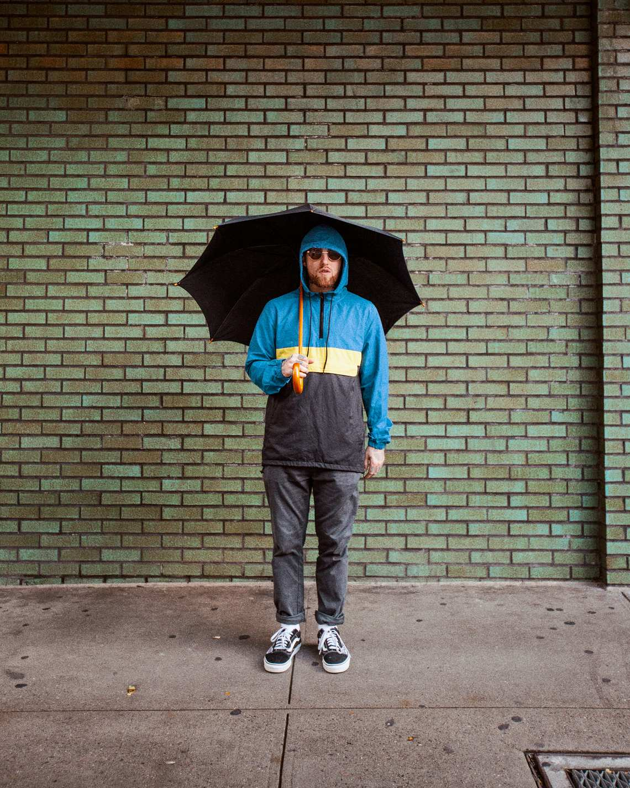
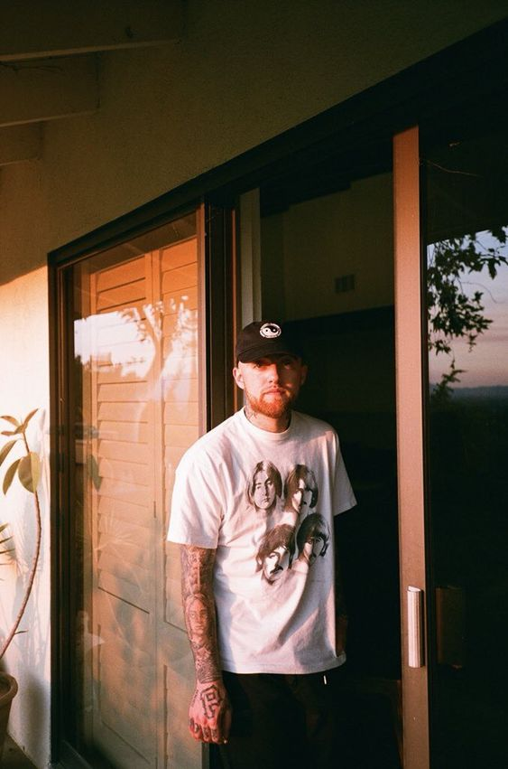
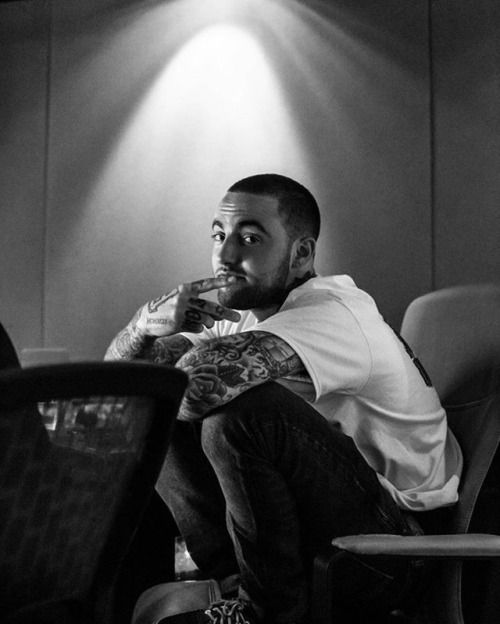
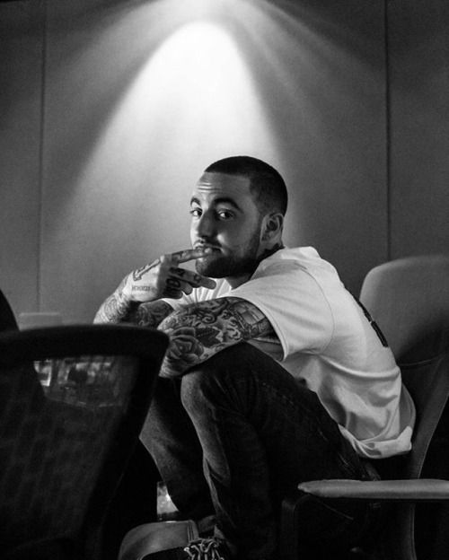

Pittsburgh-based label Rostrum Records picked up Miller that same year, while his third mixtape K.I.D.S. was in production. Through fervent promotion on social media, aided in part by his association with Wiz Khalifa under the label, he was recognized by XXL as part of their annual Freshman Class in 2011. Later that year, Mac Miller released his fifth mixtape, Best Day Ever. The song peaked at number 75 on the Billboard Hot 100 chart and later became a certified platinum record. Then, Blue Slide Park was released. His first full-length album debuted on top of the charts, and its singles “Smile Back,” “Frick Park Market,” and “Party on Fifth Ave,” were all featured on the Billboard Hot 100 chart. During this time, Miller released two mixtapes, I Love Life, Thank You and Macadelic, the latter of which featured production by Pharell. In 2013, Mac Miller founded REMember Music, a label imprint named after his friend who had died.





 
